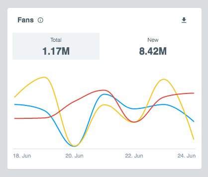

In this Falcong In-front workshop, You'll create a fully working Measure Widget combining
falcon ng components
using the widget component,
Redux
and
Reselect
.
Let's start by creating the definition of your widget.
You will need to go to the /widgets/widget.ts file and add a new key to the object that corresponds to the id of your widget.
A widget has the following properties:
const widgets = {
brands_fans: {
metrics: ["brands_fans_total", "brands_fans_new"],
template: "brandsChart.html",
id: "brands_fans",
description: "This is the description of a widget",
title: "Fans",
serviceId: "brand_service",
size: "small"
}
}
Since the actual service asking the backend for data will live in the Html-Client we need to mock a service that will return a response with the same format.
First lets register the service in the metric reducer using our serviceId.
In the variable called serviceMap, add your new service id, calling the angular service that you will have in the html client.
const serviceMap = {
brand_service: (...args) =>
$injector.get('brandOverviewAPIService')
.getBrandsMetrics(...args)
};
For the purpose of this workshop the brandOverviewAPIService
service has been created for you.
Understand how the service uses mock helper functions to return a different format depending on the metric.
This mock functions will take into account your selections as period and sources to return more realistic data.
Include your metric/s in the response you expect.
In this case mockLineChart.
Code hereCode hereFirst of all create an html file in /wdigets/templates/ with the same name you had in your widget definition.
Then, lets think about the pieces we need for our widget:
We will use fang-metric for the top part and fang-button so the metrics are clickable
and fang-linechart for the chart at the bottom.
We will also use fang-loader fang-loader-wrapper to handle loadig times in the widget and
fang-card for the widget container.
So let's import them in our index.ts in src to tell my angular module that we will use them
const mod = angular.module('falconWidget.measureWidgets', [
components.loader.name,
components.card.name,
components.button.name,
components.lineChart.name,
components.metric.name,
components.loaderWrapper.name
]);
So now we can have our components in in the template
Lets start by showing the widget title and description in the fang-card
Code here